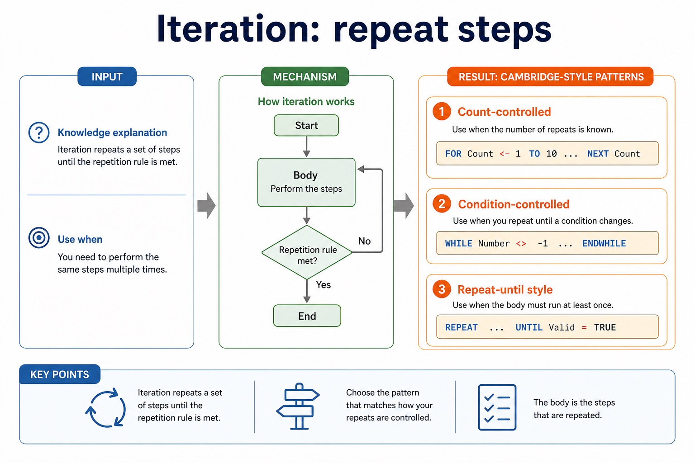

Cambridge AS9618 | Paper 2 | Section 9: Algorithm design and problem-solving
Sequence, selection and iteration
Flexible-depth lesson
S9.06 | Learn from the diagrams, test the method, then choose the practice you need.
Choose a Quick, Full or Deep route
Quick route
Use the diagnostic, learning objectives, first worked example and foundation question. Stop once the learner can explain the central distinction accurately.
Full route
Use every knowledge-point material set, the worked method, the terminology check and all questions.
Deep route
Add the prerequisite refresher, ask learners to connect the concept checklist, discuss the labelled extension and complete a transfer question without a model answer.
Part 1 | optional depth
Prerequisite knowledge and quick diagnostic
Recall S9.03 before starting this lesson.
Give one accurate definition or method step before continuing. If it is missing, revisit only that prerequisite.
Open optional prerequisite refresher
An algorithm is a solution to a problem expressed as a sequence of defined steps; the definition requires both the problem-solving purpose and the defined sequence.
Understand what an algorithm is.
Part 2 | knowledge-point material sets
Learn each point through visuals
Follow the map, the three-part explanation and the concrete cue. Open precise wording only after the idea is clear.
Open the concept checklist and choose what to teach
sequence
selection
iteration
01
S9.06 · decision
Sequence · Selection · Iteration
Concept map
sequenceselectioniteration
See how it works
EvidenceThe three basic algorithm constructs are sequence, selection and iteration (repetition)
Choicestudents must recognise and use each construct, including combinations of constructs
Reasondesign with input-process-output, use sequence, selection and iteration, document the same algorithm in structured English, a flowchart or pseudocode, and convert between the specified representations without…
S9.06 diagrams
1 / 3
01
Comparison · 1 of 3
Real algorithms usually combine the three structures
Open text transcript
Combining structures
1 Use sequence to initialise variables and read inputs.
2 Use iteration when the same action happens repeatedly.
3 Use selection inside the loop when each item needs a decision.
4 Use sequence after the loop to calculate or output final results.
5 Indent nested structures so the examiner can see the logic.
02
Process · 2 of 3
Sequence: steps run in a fixed order
Open text transcript
Knowledge explanation
Sequence is used when every step must happen once, in order, with no branch and no repetition.
INPUT Length
INPUT Width
Area <- Length Width
OUTPUT Area
03
Concrete example · 3 of 3
Stepwise refinement turns a high-level algorithm into implementable modules
Open text transcript
Stepwise refinement starts with a high-level algorithm and repeatedly replaces each complex step with a smaller sequence of defined substeps.
Refinement stops when every step is precise enough to implement and its input and output are clear.
At each level, preserve the parent step's purpose and input-process-output relationship.
Related substeps can be expressed as program modules, including procedures that perform actions and functions that return calculated values.
Every level must reduce ambiguity and collectively remain a complete solution.
Open precise syllabus wording
Understand and use sequence, selection and iteration.
The three basic algorithm constructs are sequence, selection and iteration (repetition); students must recognise and use each construct, including combinations of constructs.
Supporting diagram library
1 / 8
01
Diagram · 1 of 8
Iteration: repeat steps

Open text transcript
Knowledge explanation
Use when
Cambridge-style pattern
Count-controlled
the number of repeats is known
FOR Count <- 1 TO 10 ... NEXT Count
Condition-controlled
repeat until a condition changes
02
Diagram · 2 of 8
Cambridge pseudocode is the exam form; Java is support only
Open text transcript
Initialise PassCount to zero before processing five marks.
Input Mark inside the FOR loop and increment PassCount only when Mark is at least 50.
Close the conditional with ENDIF before NEXT Count.
Output PassCount after the loop.
03
Diagram · 3 of 8
Selection: choose a path using a condition
Open text transcript
Knowledge explanation
Selection is used when the algorithm must decide between different actions.
INPUT Mark
IF Mark = 50 THEN
OUTPUT "Pass"
OUTPUT "Resit"
04
Diagram · 4 of 8
Turn vague answers into mark-worthy answers
Open text transcript
Interactive answer fixer
Weak answer
Choose a weak answer to see a stricter version.
05
Diagram · 5 of 8
Match the scenario to the correct algorithm pattern
Open text transcript
Pattern choice
Scenario clue
Core pseudocode feature
One precise explanation
exactly 10 readings
Count-controlled loop
FOR Index <- 1 TO 10
The number of repetitions is known before the loop starts.
06
Diagram · 6 of 8
Paper 2 wants readable Cambridge-style pseudocode
Open text transcript
Initialise Total and Count, then input the first Value.
While Value is not -1, add it to Total and increment Count.
Input the next Value inside the WHILE body before ENDWHILE.
If Count is greater than zero, calculate Average using real division and output it.
Java may support understanding but is not the Cambridge pseudocode answer format.
07
Diagram · 7 of 8
Section 9 in one page
Open text transcript
Retrieval map
Signal words
Expected mechanism
Typical marking error
IPOC / decomposition
scenario, requirements, constraints
break problem into inputs, processing, outputs and rules
copying the story without design decisions
08
Diagram · 8 of 8
Turn question wording into an algorithm plan
Open text transcript
Scenario triage
Step 1: Output first
Ask: what must be displayed, returned or stored at the end? The final output tells you which variables need to exist.
Output needed: average rainfall
Therefore:
Total is needed
Count is needed
Average <- Total / Count
Apply the idea
Worked method
01Count five passing marks
02Sequence sets PassCount to 0.
03A FOR loop iterates through five marks.
04Inside the loop, selection tests Mark = 50 and increments PassCount only on the true path.
05Sequence after the loop outputs PassCount.
Open precise terminology and exam facts
The three basic algorithm constructs are sequence, selection and iteration (repetition); students must recognise and use each construct, including combinations of constructs.
Sequence executes defined steps once in order. Selection chooses one of two or more paths using a condition. Iteration repeats one or more steps using a count or a condition.
A complete algorithm often combines the three constructs: use sequence to initialise and input, iteration to process repeated items, and selection inside the loop when each item needs a decision.
Choose the construct from the required behaviour. A known number of repetitions suggests count-controlled iteration; a stopping rule based on data suggests condition-controlled iteration.
Algorithm design review: define an algorithm as a solution expressed as a sequence of defined steps; use abstraction to retain essential details in an abstract model; use decomposition to express the problem as connected modules; and choose meaningful identifiers recorded in an identifier table.
Solution review: design with input-process-output, use sequence, selection and iteration, document the same algorithm in structured English, a flowchart or pseudocode, and convert between the specified representations without changing its control flow.
Development review: use stepwise refinement until steps are programmable, and construct and interpret logic statements that define decisions, loop conditions or Boolean values. Core answers must not replace these requirements with tracing, Java syntax or vague planning advice.
Beyond syllabus / 延伸知识（不要求背诵）
the same algorithm can be expressed in many programming languages; its logic should remain independent of syntax.
Part 3 | select by learner need
Practice by question type
explainexplainfoundation4 marks
Question 1. Develop a short algorithm that inputs ten marks and outputs how many are passes, labelling where sequence, selection and iteration are used.
Show answer and marking guidance
Answer: sequence initialises the pass count; iteration processes exactly ten marks; selection tests each mark against the pass condition; sequence outputs the final count after the loop
Marking guidance: Do not award a construct name unless the stated algorithm uses it for the correct behaviour.
Common error: For the command word explain, perform that exact action; do not replace it with an unrelated fact.
constructdiagramapplication2 marks
Question 2. Which construct executes steps once in a fixed order?
Show answer and marking guidance
Answer: Sequence.
Marking guidance: Award one mark for each distinct, technically accurate point or method step.
Common error: Do not repeat the same point in different words; each mark needs a separate idea or method step.
constructdiagramtransfer2 marks
Question 3. Which construct chooses between Pass and Resit?
Show answer and marking guidance
Answer: Selection.
Marking guidance: Award one mark for each distinct, technically accurate point or method step.
Common error: Do not copy the worked example unchanged; transfer the method and check it against the new context.
Part 4 | close when ready
Summary and exam reminders
Summary
Define sequence, selection and iteration with the exact technical vocabulary expected by the syllabus.
Use the lesson method on a fresh context and show the intermediate decision, representation or calculation.
Match the shape of the answer to the command word and the available marks.
Check the final answer against the scenario instead of repeating a memorised sentence.
Common error to correct
Students often start coding before defining the output. Correction: an algorithm is easier to design when the required result is known first.
Exam technique
Follow the command word: state gives a fact; explain links a cause to a consequence; compare covers both sides.
Match the number of independent points or method steps to the available marks.
For sequence, selection and iteration, use the exact technical term before applying it to the scenario.